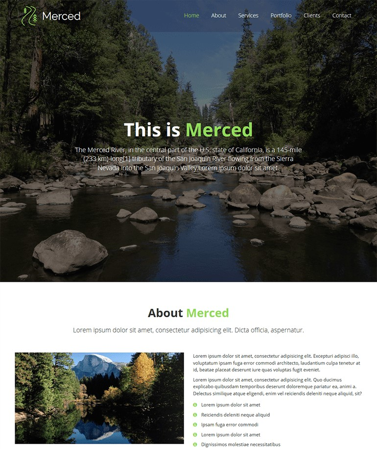

Other Projects
adsfadsfa


Merced is a modern and stylish HTML landin page/porfolio bootstrap template. Designed for any creative designer, freelancer, photographer or any creative profession. It is fully responsive and retina/HIDPI ready making it pixel sharp on any devices.
Merced is a free Bootstrap startup website template that gives your project a boost. This template is designed if you are just about to launch a website but have not executed it yet, speed things up with an professional and elegant premium template but does not cost you a single penny. It is just a click away, and you can begin using it.
Key features of Merced Bootstrap startup template are responsiveness and retina readiness. The page skin is also cross-browser compatible and loads fast for top-notch performance and enhanced user experience.
It is packed with features which you can take to your advantage. Use Merced precisely as it is, or feel free to change as you might need.
Merced theme features a sleek one page layout which is well suited for business and landing page style websites.
Built in Font Awesome support. Vector based icons that can be used in any color and size in the website.
It is a highly customizable theme with unlimited options. There are several
Fully responsive and optimized for all mobile devices. It executes 'Mobile First' approach.
Sharp text, vibrant colors, stunning graphics, sharp images, premium feel and beautiful vectorized icons Retina displays.
Fullscreen hero image will make your most important content to stand out. Great to call for action.